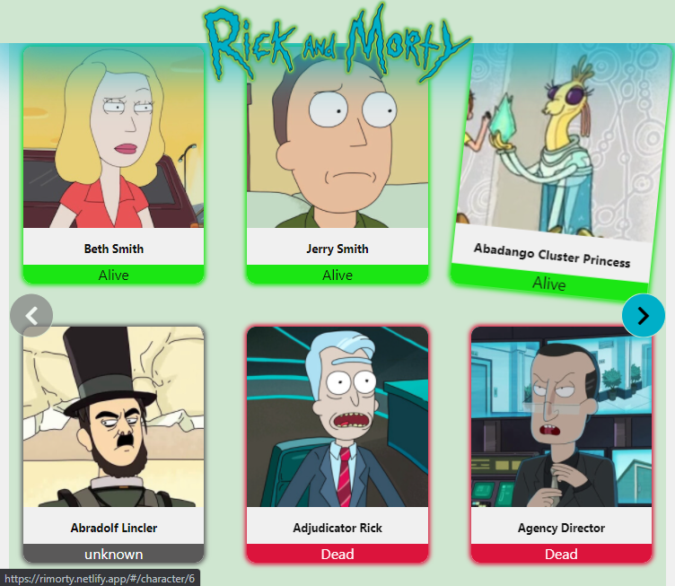
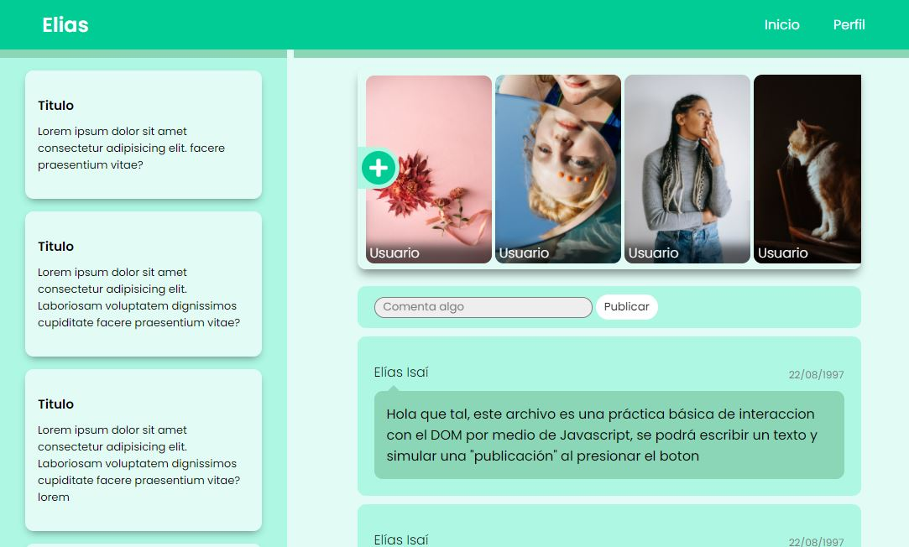
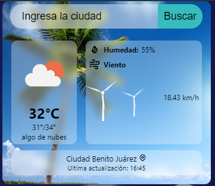
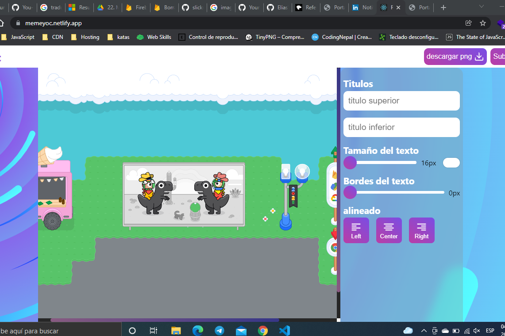
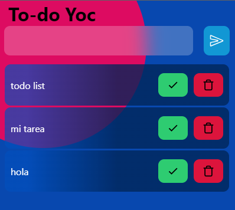
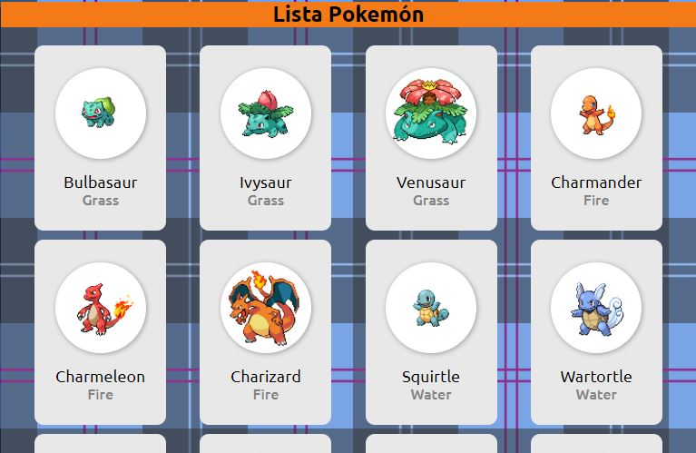

Acerca de mí
Mexicano, de Escobedo Nuevo León, comenzando con el camino del desarrollo web 🌐, interesado en aprender nuevas herramientas para mejorar habilidades en proyectos web y en aumentar mi experiencia. De manera autodidacta me estoy formando como "web developer", realizando proyectos en programación y diseño web. 💻

Skills
Estas son las habilidades que he empezado a manejar. mis practicas han sido desarrolladas por medio HTML, CSS y JavaScript, además he comenzado el aprendizaje con ReactJS de manera autodidacta y las siguientes herramientas son las que continuaré aprendiendo.
HTML
CSS
JavaScript
React
Redux
Sass
Git
Proyectos

Página Rick & Morty

Diseño red social

Mini weather app

Memeapp

Lista de quehacer
